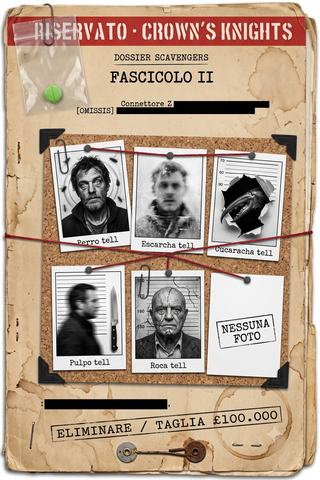

Dossier Scavengers · fascicolo II
La caccia ai cinque
Cinque HERO da eliminare per conto di una gang rivale — e due di loro non sono più del tutto umani. Dalle formiche di un barbone al crollo di un parcheggio, fino alla trappola della gabbia: la caccia in cui non si capisce più chi sia il mostro.
- ≈ 31 min di lettura
- a cura dell'Analista
- dalle partite a Heroes Unlimited
- anche in EPUB, 1,1 MB
Nota dell’Analista
RISERVATO — CAVALIERI DELLA CORONA
Dossier Scavengers · fascicolo II
Il secondo fascicolo riprende il caso là dove i soggetti accettano, da una gang, un contratto contro un’altra: l’eliminazione di cinque metaumani dei Ghetto Boys, centomila sterline a testa. Vi confluiscono le deposizioni dei soggetti, le schede dei cinque bersagli (fotografie parziali, alcune anteriori all’evento zero), i referti forensi del parcheggio crollato e dell’hotel, e la rassegna stampa sull’«attentato dimostrativo».
Vale, anche qui, l’avvertenza sul primo fascicolo: dove i verbali risultano più ordinati del possibile, l’Analista lo segnala; dove non può, scrive [OMISSIS].
Hanno accettato di dare la caccia ai mostri. Nessuno, per tempo, si è chiesto a chi somigliassero i cacciatori.
Indice
A cura dell’Analista.
- La caccia ai cinque (autunno · i locali dei Ghetto Boys, un parcheggio, un hotel chiuso) — cinque bersagli, due mostri, una trappola: e un cadavere, sul tavolo autoptico, che non torna.
Cronologia del caso
Il mondo si conta dall’«evento zero» del 2012. I fatti qui raccolti si svolgono nell’autunno londinese del presente. In grassetto la tranche raccolta in questo volume.
- autunno — Le taglie di Londra (Arlecchino / Miwa) — l’attico di Lord; la taglia di Khan; la strage sul cargo.
- autunno — La caccia ai cinque (Mau / BORIS / Darko) — il contratto sui cinque HERO dei Ghetto Boys; Perro e le sue bestie; l’agguato a Cucaracha ed Escarcha nel parcheggio e il crollo; la trappola della gabbia; lo smantellamento dei covi e la cattura di Roca.
- autunno — Il panfilo (Darko / Arlecchino / Lord) — la crociera di Modi Mittal; l’attacco dei Leakers; la partenza per l’Isola di Man.
Le date esatte restano incerte — nel mondo dopo l’evento zero nessuno tiene più un calendario —, ma i fatti qui raccolti si collocano tutti nel medesimo autunno.
La caccia ai cinque
RISERVATO — CAVALIERI DELLA CORONA Fascicolo II · il contratto sui cinque metaumani dei Ghetto Boys
Relazione dell’Analista. Il presente fascicolo ricostruisce il periodo in cui i soggetti già noti come «Scavengers» accettarono, da una gang, un contratto contro un’altra gang: l’eliminazione di cinque metaumani, e la loro sparizione, per centomila sterline a testa.1
Si dà atto che, delle cinque persone in oggetto, alla chiusura del fascicolo due risultano decedute, una in custodia e due irreperibili; e che nessuno dei cinque esiti è ascrivibile, in senso proprio, all’abilità dei soggetti. I soggetti hanno vinto per fortuna, per tradimento altrui e per essersi trovati accanto qualcosa di più mostruoso di ciò che cacciavano.
È di quest’ultima circostanza che la relazione si occupa più a lungo. Il gruppo aveva accettato di dare la caccia ai mostri. Nessuno, al momento di firmare, si era chiesto che cosa fossero i cacciatori.
Si conferma, come nel fascicolo precedente, che parte della ricostruzione risulta più ordinata di quanto le scene avrebbero consentito. [OMISSIS].
1 · Il box vuoto
Il contratto sui cinque nacque da un fallimento. Il carico d’armi sottratto dal gruppo — occultato, come si è detto, in un box a noleggio — non era più là.
I soggetti Kamekona e Cherenko, recatisi al deposito per inventariare il bottino, trovarono la saracinesca del box accartocciata verso l’alto, come da una pressa colossale, e il pavimento antistante deformato, incurvato al modo di una materia plastica. Il box era vuoto. Nessun sistema noto a questa unità produce quel tipo di deformazione; il fascicolo si limita a registrarla, e a osservare che il soggetto responsabile aveva così lasciato, senza saperlo, la prima delle sue firme.2
La sparizione delle armi ebbe un effetto immediato sui rapporti del soggetto Veneziani con i Tottenham, che lo accusarono di aver rivelato ai Ghetto Boys la posizione del carico. La contestazione era infondata — nessuno dei soggetti aveva parlato. Anzi: dai concitati messaggi di quei giorni sarebbe affiorato il coinvolgimento, nel recupero delle armi, di uno stesso metaumano dei Ghetto Boys — quel «Rochas» in cui questa unità riconosce Roca, l’elementale della pietra, il solo capace di accartocciare verso l’alto una saracinesca d’acciaio e di deformare un pavimento come cera. La colpa su cui i Tottenham costruirono la propria leva, insomma, non era dei soggetti, e puntava dritta a uno dei cinque bersagli che di lì a poco quegli stessi soggetti avrebbero cacciato — e catturato. Una simmetria che, allora, nessuno colse. Ma i Tottenham non cercavano un colpevole: cercavano una leva. E la ottennero, affidando al gruppo, in luogo della fiducia perduta, un incarico che nessun affiliato coltivato avrebbe ricevuto: la lista dei cinque.
A me la cosa non piaceva, e lo dico da subito. Non per scrupolo — sarebbe ridicolo, dopo la nave. Non mi piaceva come tecnica. Ci offrivano centomila sterline a testa per far sparire cinque persone che non conoscevamo, sulla parola di gente che ci aveva appena dato dei traditori. Un medico impara presto che le diagnosi fatte in fretta sono quelle che ti uccidono il paziente. Solo che qui il paziente non eravamo noi. E allora abbiamo firmato.
La deposizione è del soggetto Kamekona, samoano, medico, e — nell’economia di questo fascicolo — l’uomo che vede più chiaro di tutti e agisce, ciononostante, come gli altri. Si segnala fin d’ora, perché è la sua caratteristica costante: capisce, annota, e prosegue.
La definizione del contratto richiese un incontro diretto, che i Tottenham pretesero con il capo del gruppo e non più con il solo Veneziani, del quale non si fidavano più. Vi fu inviato, come rappresentante, il soggetto Del Corvo — scelta che le deposizioni motivano con la sua «parlata milanese», ritenuta idonea a imporsi su interlocutori giudicati rozzi. Il colloquio, riferiscono gli atti, partì su toni ruvidi, con uno scontro di personalità fra il rappresentante e il capobanda Degongo Smith, e si chiuse su un reciproco, sospettoso rispetto. I termini: centomila sterline per ciascuno dei cinque, la sparizione dei corpi possibilmente senza tracce.
Dei cinque, il gruppo possedeva le schede sequestrate: Perro, Escarcha, Cucaracha, Pulpo, Roca. Di tre soltanto una fotografia; di Roca una vecchia foto segnaletica anteriore all’evento zero; di Escarcha, nulla, salvo l’origine centroamericana e un passato in squadroni della morte — il che ne faceva, sulla carta, il più pericoloso. I Tottenham aggiunsero un elenco di locali dove i bersagli erano soliti mostrarsi, essendo almeno due di loro — Cucaracha e Pulpo — di note abitudini mondane. Il gruppo si divise in due squadre.
2 · Le formiche
La prima squadra — i soggetti Kamekona e Del Corvo — si diresse a un locale latino, il K-CHE, sulle tracce di Alvaro Narvaez, detto «Pulpo», ballerino di fama. Non lo trovarono. Trovarono altro.
La ragazza si chiamava Cherry. Serviva ai tavoli, e ho fatto quello che faccio: le ho parlato. Non per il bersaglio, all’inizio; per il gusto di parlarle. Poi il gusto e il lavoro hanno coinciso, come capita agli uomini fortunati e ai bastardi, e Cherry mi ha detto di quel tale che sta nel vicolo sul retro. Tutte le sere. Fermo. Che guarda chi esce. Un senzatetto, ha detto, ma di quelli che ti fanno passare la voglia di dargli la monetina.
Si dà atto che il soggetto Kamekona, nel raccogliere quelle informazioni, aveva altresì concordato con la cameriera un incontro privato a fine turno, e che il duplice fine — l’indagine e la conquista — è, nelle sue deposizioni, una costante. È l’unico dei soggetti che uccida di malavoglia e seduca di buona: contabilità morale che questa unità registra senza saperne trarre un giudizio univoco.
Il «senzatetto» corrispondeva, per quel poco che la scheda diceva, a Pablo Ordoñez, detto «Perro»: metaumano dal controllo del regno animale, dall’aspetto — annotava la scheda — di uno dei tanti derelitti della città. Il soggetto Del Corvo, applicata la propria vista a raggi X e poi l’ecolocazione al vicolo, non rilevò nulla di anomalo: soltanto un uomo che dormiva tra i cartoni. I due soggetti decisero di provocarlo.
Il Gracile gli ha dato un calcio ai cartoni. Per «vedere la reazione», ha detto. La reazione è arrivata. Prima i pipistrelli — un vicolo intero di pipistrelli, dal nulla, come in un film — e mentre eravamo lì a coprirci la faccia, da sotto, dal selciato, le formiche. Migliaia. In fila, in ordine, come una legione ai comandi di un generale antico. Ci hanno morso le caviglie, le gambe, e ci hanno spinti fuori dal vicolo di corsa, due uomini adulti, uno dei quali solleva le automobili, messi in fuga dagli insetti. Al bordo del vicolo la legione si è fermata. Come a un ordine. E lui non c’era più.
Si dà atto che il soggetto Del Corvo, dotato di forza sufficiente a strappare le portiere di un’autovettura, dichiara di non aver potuto nulla contro alcune migliaia di formiche. Il particolare non è comico. È istruttivo: nel mondo dopo l’evento zero, la potenza serve di rado, e quasi mai contro chi ha capito come aggirarla. Perro aveva capito.
Il soggetto Kamekona ne trasse, a verbale, una riflessione che riguarda meno la caccia e più la ragione per cui — a suo dire — vi partecipa.
Guardatelo, quel Perro. Un barbone. Uno che passi accanto ogni giorno e non vedi. E dentro ha un potere che mette in fuga due uomini come noi. Perché lui? Questa è la domanda che mi ha portato a Londra, non le taglie, non le gang. Le radiazioni Z colpiscono a caso: un uomo sì, il suo vicino no, un senzatetto sì, un premio Nobel no. Nessuno sa perché. Io sono un medico, e un fenomeno che sceglie i suoi ospiti tirando i dadi è la cosa più interessante — e più terribile — che il nostro secolo abbia prodotto. Caccio con questa gente perché è l’unico modo che ho per starci accanto e capire. Finora ho capito solo che nessuno capisce.
L’unità registra la deposizione perché è, dei soggetti, il solo movente che guardi oltre il denaro e il sangue. Se il soggetto Kamekona vi abbia trovato risposta, nel corso del caso, non risulta agli atti.
La seconda squadra — i soggetti Cherenko e Veneziani — ebbe miglior fortuna al Ministry of Sound, dove individuò con ragionevole certezza Eduardo Smith, detto «Cucaracha». L’ingresso non presentò difficoltà: uno dei buttafuori aveva riconosciuto il soggetto Cherenko dagli incontri clandestini della settimana precedente, sui quali aveva scommesso con profitto, e lo fece passare con deferenza. Nel privé sedeva, festoso, un uomo corpulento in compagnia di un amico e di due donne del locale: per fisionomia e stazza, con ragionevole probabilità il messicano cercato. Il soggetto Veneziani tentò un approccio diretto, che il grasso ignorò con la noncuranza che si riserva agli importuni; toccò allora al soggetto Cherenko, più prudente, condurre il contatto.
Grasso, allegro, nel privé con gli amici e due ragazze. Sembrava un uomo qualunque che si diverte. Io a queste cose ci vado piano: non ho fatto la faccia cattiva, ho fatto la mazzetta al buttafuori e ho fatto arrivare all’amico suo un biglietto con dentro una pasticca di Connettore Z e un’ora e un posto. Le quattro. Il parcheggio coperto. Poi sono andato via prima che qualcuno mi mettesse a fuoco. Volevo vederlo, il grasso, se veniva. Se veniva, era lui. Semplice.
Consegnato il biglietto, il soggetto Cherenko non lasciò subito il locale: si trattenne al bar, offrendo da bere anche al soggetto Veneziani e godendosi il panorama femminile, per non destare sospetti prima di dileguarsi. L’appuntamento era fissato per le quattro del mattino, in un parcheggio coperto poco distante. Se il grasso vi si fosse presentato, l’identificazione sarebbe stata certa. Vi si presentò.
L’unità osserva che l’intero impianto della caccia — provocare, attirare, verificare — era, a quel punto, tecnicamente ineccepibile. Ciò che il gruppo non aveva previsto è che due dei cinque non fossero, in senso stretto, più uomini.
3 · Il parcheggio
All’appuntamento delle quattro i soggetti si disposero nel parcheggio sotterraneo: Cherenko e Darko fra le auto; Kamekona a un piano superiore, per la visuale; Guile a distanza; Miwa in arrivo con la propria stazione mobile. Dal furgone atteso scese, come sperato, Cucaracha. Scese disarmato e ridente. Poi cambiò.
Ho visto un uomo grasso diventare una cosa. Non lo dico per colore. L’ho visto: la schiena si apre, la corazza esce, le braccia si fanno mazze, spuntano occhi dove non ci sono occhi. Una canocchia. Una di quelle bestie del mare tropicale, ingrandita fino all’osceno. Gli ho sparato. Le pallottole si fermavano sulla corazza come sassi su un muro. Ho pensato, in quel momento, una cosa sola, e non era una bella cosa da pensare per uno come me: che forse esisteva qualcosa che non potevo battere.
Alla trasformazione di Cucaracha si aggiunse la comparsa del secondo mostro. Fierro Diago, detto «Escarcha» — il killer della lista, di cui nessuna fotografia era disponibile — si manifestò dapprima come una figura immobile a distanza, che fissava la scena. Il soggetto Darko, avvicinatosi per colpirla, scoprì trattarsi di una statua di ghiaccio finemente scolpita, priva di mente. Poco oltre ne individuò una seconda, che pareva invece un uomo vero, un metaumano; e fu quella a serrare le gambe del soggetto Guile in un blocco di ghiaccio, quasi paralizzandolo. Ma quando il soggetto Darko la raggiunse, scoprì che anche quella era una statua. Come il killer si spostasse così rapidamente fra un simulacro e l’altro, e dove si trovasse in un dato momento, nessuno dei soggetti seppe dire. Le deposizioni concordano nel non aver mai visto Escarcha in carne e ossa: soltanto le sue statue, e i loro effetti. Il solo a vederlo — morto — sarebbe stato, giorni dopo, il soggetto Darko, sul proprio tavolo autoptico.
Il soggetto Darko eresse contro Cucaracha una barriera telecinetica. Fu spezzata da un solo colpo del mostro, che nel medesimo gesto frantumò una colonna portante. Il soggetto Guile, liberatosi dal ghiaccio grazie al proprio campo di forza, colpì Cucaracha al torace; ne ricevette in cambio un contraccolpo che lo scagliò a oltre dieci metri, con il campo di forza pressoché esaurito. Il soggetto Cherenko, in corpo a corpo, riuscì a far ingerire alla creatura una dose di Connettore Z nella speranza di provocarne il collasso, e ne ricavò alcune costole rotte e la visione della creatura che, invece di collassare, cresceva: nuove lame, nuova chitina.
Gli ho ficcato la droga in gola con la mano. Ho rischiato il braccio per farlo. Pensavo: se ai ragazzi ricchi il Connettore Z dà i superpoteri per un’ora, a una cosa così magari gli scoppia il cuore. Non gli è scoppiato niente. È cresciuto. Ho visto un mostro grosso diventare un mostro più grosso perché gli avevo dato da mangiare. Ci sono cose che a impararle uno diventa più prudente. Io sono diventato più prudente quella notte. Un po’ tardi, ma è successo.
Nella furia, Cucaracha prese ad abbattere i piloni portanti. Il parcheggio cominciò a cedere.
Siamo scappati. Tutti. Non è una ritirata di cui mi vergogno: è l’unica decisione intelligente della serata. Una struttura di cemento che ti crolla addosso non la si combatte. Si corre. Ho corso.
La struttura collassò in una nube di polvere e nebbia. Il referto stabilisce che non vi furono vittime civili sotto le macerie. La stampa attribuì il crollo a un attentato dimostrativo, ipotesi corroborata da numerose testimonianze relative a un veicolo a otto ruote che aveva aperto il fuoco su alcune automobili — il mezzo del soggetto Miwa, di cui si tornerà a dire.3 I sistemi di videosorveglianza della zona risultarono, quella notte, fuori uso.
La sola, fra i soggetti, a non mostrare turbamento fu il soggetto Miwa, che nei giorni successivi si chiuse nell’officina del soggetto Lord a fabbricare munizioni ed equipaggiamenti personalizzati per tutti, mentre la città si allarmava per la segnalazione di un veicolo armato in circolazione. Questa unità annota, senza poterlo allora documentare, che il distacco del soggetto di fronte alla carneficina che aveva contribuito a provocare non era freddezza operativa, ma il progredire di una condizione che i suoi stessi compagni tardavano a riconoscere. Se ne avrà, nel fascicolo, ulteriore riscontro.
Ciò che nessuno dei soggetti sapeva, allontanandosi, è che uno dei due mostri non si era allontanato affatto.
4 · L’autopsia
Il soggetto Darko prestava servizio, si ricorderà, come consulente forense della Polizia Metropolitana. Fu dunque lui, giorni dopo, a trovarsi davanti un cadavere recuperato sotto le macerie del parcheggio: un ritrovamento non divulgato alla stampa, per la delicatezza dello stato del corpo. Si riporta la deposizione, perché è la sola pagina del fascicolo in cui la voce della talpa incontra il proprio lavoro ufficiale, e non se ne avvede — o finge di non avvedersene.
L’ho riconosciuto subito. Era la figura che avevo inseguito per tutto lo scontro, quella delle statue. Escarcha. Dalla vita in su era un uomo. Poi il corpo degradava in ghiaccio frantumato da una forza immane, morto e immoto, come una trasformazione interrotta a metà da un colpo. Ho iniziato la dissezione. E il ghiaccio che componeva il bacino e le gambe — intatto fino a un attimo prima — si è sciolto in pochi istanti, lasciando colare interiora e fluidi sul tavolo d’acciaio. Ho scritto sul referto: morte per trauma massivo da impatto, non compatibile con il solo crollo. Probabilmente ha incontrato Cucaracha durante la fuga, e il mostro lo ha travolto.
Ho aperto un uomo che tre notti prima avevo cercato di uccidere. È un genere di cosa che al corso di medicina legale non ti insegnano, perché nessuno immagina che possa capitarti. E la parte peggiore non è stata sezionarlo. La parte peggiore è che l’ho fatto bene. Mani ferme, tagli puliti, referto ineccepibile. Sono un buon tecnico. Il guaio è che lo sono anche quando il corpo sul tavolo lo conoscevo da vivo, e da nemico. Mi sono chiesto, per un attimo, se fosse normale. Poi ho finito il referto, perché era il mio turno, e i turni non aspettano le domande.
Si dà atto che il referto ufficiale redatto dal soggetto Darko su questo cadavere è, agli atti di questa unità, corretto in ogni sua parte. Si dà altresì atto che il soggetto ometteva, nel medesimo referto, ogni indicazione sul come fosse venuto a conoscenza dell’esistenza del defunto, dei suoi poteri e delle circostanze della sua morte. La distanza fra ciò che Darko sapeva e ciò che Darko scriveva è, in miniatura, l’intero vizio di questo fascicolo. [OMISSIS].
Il killer della lista — il più temuto dei cinque, quello di cui non esisteva volto — era stato ucciso senza che alcuno dei soggetti lo toccasse, dal suo stesso alleato in fuga. Il gruppo lo apprese dal referto di Darko e lo festeggiò al pub.
Fu nel corso di quella stessa serata che il soggetto Darko comunicò ai compagni di aver fatto domanda di ammissione ai Cavalieri della Corona — la sezione speciale di recente costituita per affrontare i criminali metaumani, composta di ex militari e, si riteneva, priva di metaumani fra le proprie file. Ai compagni la presentò come un’opportunità: più informazioni, più coperture, un orecchio dentro l’unità. Nessuno di loro, e forse neppure lui, misurò per intero ciò che stava per accadere: che un metaumano non dichiarato, sospettato di omicidio plurimo, stesse per entrare — con l’applauso dei suoi nuovi colleghi — nel corpo incaricato di dargli la caccia. Da quel momento le scene del crimine su cui i soggetti lasciavano i loro morti sarebbero state esaminate, in più d’un caso, dallo stesso soggetto che quei morti aveva contribuito a fare. Questa unità sa oggi ciò che allora ignorava. Lo deve, in parte, proprio a lui. [OMISSIS].
Si annota, per dovere di cronaca, che quella sera i soggetti festeggiavano un morto che non avevano fatto loro.
5 · La gabbia
Il fatto centrale di questo fascicolo è un massacro, e come il massacro del cargo non fu un incidente: fu una trappola, tesa però ai soggetti da altri.
L’occasione fu un torneo di lotta clandestina, allestito in un albergo dismesso la cui sala ristorante era stata segretamente ristrutturata. Il soggetto Cherenko vi partecipava come combattente; vi conseguì, prima del disastro, tre vittorie regolari, e un fatto che merita menzione perché è l’unico episodio dell’intero fascicolo in cui un soggetto si comporta con onore.
C’era un orientale, un monaco, Pai Kang. Un maestro. Conosceva i punti del corpo che io non sapevo di avere, e me li ha premuti tutti. Potevo usare le mie capacità e finirlo subito. Non l’ho fatto. Volevo battere un uomo migliore da uomo, e al secondo round l’ho battuto, e lui si è arreso e mi ha chiesto di prenderlo come discepolo. In tutta questa storia sporca, è la sola cosa pulita che ho fatto. La scrivo perché ne ho poche.
Il referto integra la deposizione. Lo scontro col monaco fu, per il soggetto Cherenko, il più duro della serata: la conoscenza dei punti vitali del proprio avversario neutralizzava gran parte del suo vantaggio metaumano, e una serie di pressioni su terminazioni nervose che il soggetto «non sapeva di avere» lo ridusse in difficoltà, salvato dal gong a fine ripresa. Curato di soppiatto dai poteri dell’alleato Cachorro, il soggetto ribaltò lo scontro nella ripresa successiva, chiudendolo con un gancio che portò il monaco a inginocchiarsi e ad arrendersi — e a chiedere, col plauso del pubblico, di divenirne discepolo. È l’unico episodio, nei tre fascicoli, in cui a un soggetto viene tributato un rispetto che questa unità non esita a definire meritato.
Si dà atto della deposizione, e si prosegue, perché ciò che seguì non ha nulla di pulito.
Il torneo, fino a quel momento, era stato quanto di più simile a una serata di ordinaria depravazione la città potesse offrire. Vi partecipavano alcuni teppisti di strada, un ex uomo-forte russo, il monaco Pai Kang, la lottatrice Mariela Real, una «sorpresa» annunciata dagli organizzatori, e il soggetto Cherenko. Il pubblico scommetteva. Fra gli scommettitori sedeva il soggetto Lord, che assistette con soddisfazione all’esito del primo incontro — l’ex uomo-forte russo, dato per favorito, strangolato con una catena da bicicletta da un giovane delinquente — e ne ricavò, oltre a una vincita, la compagnia di una rara bellezza dell’Est che gli si sedette accanto a ragionare della scommessa successiva. Se fosse una scommettitrice scaltra o un’escort in caccia, il fascicolo non lo stabilisce; annota soltanto che il soggetto Lord, di norma impermeabile, vi dedicò per il resto della serata più attenzione che alla propria sicurezza.
Il soggetto Cherenko dispose di due hooligan con la brutalità spettacolare che il pubblico chiedeva. La lottatrice Mariela Real dispose del terzo. E durante una pausa due soggetti annotarono un dettaglio che al momento non fu approfondito: dagli scarichi ricavati nel pavimento della sala saliva un odore di sangue troppo intenso per essere il residuo lavato dal ring. Il dettaglio, col senno di poi, era l’unico avvertimento della serata. Nessuno lo lesse.
Durante la finale — il soggetto Cherenko contro la lottatrice Mariela Real — il centro del ring sprofondò. Ne emerse Cucaracha, che inghiottì la Real e un inserviente. Contemporaneamente uno degli ospiti d’onore, presentato come Nachy Fidez, detto «Roca», batté un piede sul pavimento, che si sollevò a rivestirgli il corpo di roccia: il quinto della lista, elementale della pietra. Non era un incontro di lotta. Era un’imboscata dei Ghetto Boys contro i rivali Tottenham, presenti in sala, e i soggetti vi si trovarono in mezzo.
Ero nella gabbia. Capite? Nella gabbia, chiuso, con davanti la donna con cui stavo combattendo e sotto i piedi il pavimento che comincia a vibrare. Ho sentito la vibrazione prima di lei, e ho fatto in tempo a saltare oltre la rete un attimo prima che il centro sprofondasse e si portasse via lei e un ragazzo del servizio. Ho combattuto in tanti posti brutti. Ma stare chiuso in una gabbia mentre da sotto sale un mostro, quello è il genere di cosa che uno se lo sogna per il resto della vita. Io me lo sogno.
Quanto seguì è ricostruito da più deposizioni, che qui si compongono. Il soggetto Veneziani colpì Cucaracha con una scarica elettrica, dispersa dalla gabbia metallica. Il soggetto Lord trascinò in salvo, nella cantina, la propria vicina di tavolo. I due soggetti dotati di poteri mentali — il soggetto Darko e l’alleato indicato negli atti come Cachorro4 — fecero ciò che a questa unità pare la cosa più grave della notte.
L’alleato Cachorro proiettò nella mente di Cucaracha l’illusione di essere avvolto dalle fiamme. La creatura, già furiosa, esplose in un turbine di lame che fece a pezzi i presenti, calpestati a vicenda nella fuga. Il soggetto Darko tentò allora di impossessarsi della mente di Cucaracha per rivolgerlo contro Roca; ma, entrandovi, dimenticò che l’illusione dell’incendio era ancora attiva, e vi bruciò dentro insieme al mostro, mentre l’apparato sensoriale della creatura sovraccaricava la sua mente. Il risultato fu una macchina di distruzione priva di controllo, e altri morti.
Sono entrato nella sua testa per fermarlo. Invece ho preso fuoco con lui. Non c’è addestramento per una cosa così. Il capo dei Cavalieri me lo diceva, all’addestramento: tu sei da appoggio, gli altri agiscono, tu no. Non gli ho dato retta neanche una volta. Quella notte ho capito perché lo diceva.
Nel frattempo il soggetto Miwa, dall’esterno, apriva il fuoco con l’armamento del proprio veicolo sui fuggitivi in strada e sulle automobili, senza riguardo per le abitazioni circostanti né per i passanti; e attivava il proprio disturbatore, così che i soccorsi non giungessero. Il soggetto Cherenko affrontò Roca in corpo a corpo e ne uscì con un polmone perforato, in ginocchio; Roca, in preda a un’esaltazione che lo portava a incitare una folla immaginaria, non lo finì, e anzi gli aprì una via di fuga per riservarsi «la prossima sfida». La struttura infine cedette. I soggetti si rifugiarono nella cantina attraverso una botola, e vi attesero.
Da sotto, il rumore. Per diversi minuti. Poi il silenzio. Quando siamo risaliti, non c’era più niente da capire, c’era solo da guardare. Sangue e pezzi. E i Tottenham — quelli che erano venuti a godersi la serata — interrati nel marmo fino alla vita, le teste strappate e rimesse sul moncone del collo, al contrario. Un lavoro da cartello messicano. L’ha fatto Roca. Roca, che poco prima incitava il pubblico.
Va detto, per completezza, che parte del caos di quella sala fu opera dei soggetti stessi. Mentre il soggetto Lord poneva in salvo nella cantina la propria vicina di tavolo, i soggetti Guile e Darko e l’alleato Cachorro venivano travolti dalla folla in preda al panico; e fu proprio il tentativo dei due mentalisti di manovrare i mostri — l’illusione dell’incendio, la possessione mancata — a moltiplicare la distruzione anziché arginarla. Quando la struttura minacciò il crollo definitivo, i soggetti si sparpagliarono e infine si rifugiarono sotto il bancone, calandosi nella botola della cantina degli spillatoi, e vi attesero al buio che tutto finisse.
I soggetti, riemersi, si dedicarono al saccheggio: chiavi delle automobili più costose, denaro, orologi, oggetti di valore sui cadaveri. Quindi si dileguarono, mettendosi al sicuro prima dell’arrivo delle forze dell’ordine e dei vigili del fuoco. Le vetture di lusso furono affidate dal soggetto Lord ad alcuni suoi «vecchi amici» per il riciclaggio; nel volgere di una notte risultavano smontate e rimarcate, con soddisfazione di tutti. Si dà atto, perché è il dettaglio che meglio riassume i soggetti, che nella medesima mattinata in cui le automobili venivano fatte a pezzi in un’officina il soggetto Darko era convocato d’urgenza a esaminare, in veste ufficiale, la scena di quello stesso massacro. Le due attività — depredare i morti e refertarli — si svolsero in parallelo, condotte dalle stesse mani. Il referto forense successivo rilevò, nei condotti aperti da Cucaracha sotto il pavimento, tracce biologiche a DNA mutato, in gran parte animale, compatibili con il crostaceo canocchia pavone; e una squadra dei Cavalieri della Corona, calatasi nel pozzo, ne trasse la conferma che almeno uno degli autori del massacro non era, in senso biologico, più un uomo.
Da medico ho firmato molti certificati di morte. So distinguere una causa da un concorso di cause. Quella notte metà di quei morti li ha fatti Cucaracha, ed è un mostro, e va bene. Ma l’altra metà li ha fatti la paura, e la paura in quella sala l’abbiamo accesa noi: l’illusione dell’incendio, il tentativo di Darko, la giapponese che sparava in strada. Noi eravamo andati lì per uccidere cinque persone. Ne sono morte decine, e non le cinque. A un tavolo autoptico questo si chiama complicanza iatrogena: il paziente muore per la cura. Solo che qui la cura eravamo noi, e il paziente era una sala piena di gente che voleva solo vedere una scazzottata.
Si dà atto che i soggetti sopravvissero a questa notte per essersi nascosti sotto un pavimento mentre due mostri si contendevano la sala. Non la vinsero. Vi sopravvissero, e la saccheggiarono.
6 · I covi
Dopo la notte della gabbia il gruppo mutò metodo. Il soggetto Lord si presentò ai Tottenham — riuniti, e nervosi, per il lutto — e propose di eliminare i bersagli in veste di «specialista» esterno: offerta che, per quanto spiazzante, fu accettata. Ne seguì una fase di raccolta d’informazioni, in cui ciascun soggetto operò secondo la propria copertura: i soggetti Cherenko e Guile in ricognizione sui luoghi segnalati; l’alleato Cachorro a raccogliere in ambito universitario notizie sulla diffusione del Connettore Z e sui suoi finanziatori; il soggetto Darko a esaminare i nuovi dossier sugli HERO pervenuti ai Cavalieri della Corona da una fonte informale dei servizi interni.
Un dato, in questa fase, avrebbe dovuto insospettire i soggetti più di quanto li insospettì. Penetrati in un magazzino lungo il fiume, i soggetti Cherenko e Guile vi trovarono armi ed equipaggiamenti in quantità adatta non a una gang di strada, ma a una vera e propria sommossa armata. Era troppo. Una banda che si contende un quartiere non ha bisogno di un arsenale da guerra civile; se lo aveva, qualcuno assai più in alto della strada la stava armando. Il gruppo lo annotò e proseguì con la caccia, senza tirare il filo. Il filo, tirato più tardi, avrebbe condotto a un nome — ma questo appartiene al fascicolo successivo.
Della caccia vera e propria — quella condotta dai soggetti, e non subìta — restano da riferire tre atti, tutti successivi alla notte della gabbia, e tutti convergenti su un unico esito: lo smantellamento della struttura dei Ghetto Boys e la cattura di uno dei cinque.
Il primo atto fu l’assalto a una villa vittoriana occupata dalla gang. Il piano prevedeva prudenza; la prudenza durò fin quando il soggetto Cherenko non commise l’errore di informare il soggetto Miwa, che pensò bene di lanciare contro una finestra un drone carico di esplosivo artigianale, provocando in piena città un’esplosione e i relativi allarmi.
Quando Miwa fa saltare una casa non c’è più tempo di pensare. Io e il samoano abbiamo scavalcato il muro e siamo entrati. Io col lanciagranate mi sono aperto la strada, lui col machete stendeva quelli che restavano e poi gli frugava le tasche. A un certo punto ho tirato il revolver scarico in faccia a uno, perché non avevo tempo di ricaricare, e il samoano ha riso e ha fatto uguale. Non è una guerra, questa. In guerra c’è un motivo. Qui c’erano solo delle stanze piene di gente da svuotare, e noi che le svuotavamo.
I soggetti si impossessarono di documenti e apparecchi telefonici e si allontanarono all’arrivo dei Cavalieri della Corona — fra i quali, ormai, il soggetto Darko. Il bilancio fu di quattordici morti e trentacinque arresti, e la stampa cominciò a parlare di una «squadra anti-mostri».5
Il secondo atto ebbe luogo in un appartamento della città, ultimo covo privato della gang. All’ingresso vigilavano due affiliati, che i soggetti Darko e l’alleato Cachorro, di comune accordo, decisero di neutralizzare per divertimento più che per necessità: li bersagliarono per via telecinetica con vasi di fiori, coperchi di bidoni e altro ciarpame, approfittando dello stato di alterazione in cui i due si trovavano per uso di stupefacenti. A uno di essi fu sottratta la pistola dalla fondina, che prese a fluttuare via; l’affiliato, commentando ad alta voce la potenza della sostanza fumata poco prima, la inseguì, e finì nel raggio d’azione del soggetto Cherenko, che lo caricò con impeto tale da fratturargli sei costole e il cranio. Alla notazione del soggetto Kamekona sulla scarsa delicatezza del gesto, il soggetto Cherenko rispose, agli atti, «colpa di marciapiede, no mia».
All’interno la scena era quella consueta di questi accessi: alcuni affiliati storditi, presto sopraffatti dalle illusioni dell’alleato Cachorro e dalle armi degli altri. Il soggetto Veneziani riferisce di aver interrotto, in una delle stanze, una situazione di natura intima, che risolse a scariche elettriche; il dettaglio è annotato per completezza e non ha rilievo investigativo, salvo quanto rivela del tono con cui i soggetti conducevano queste operazioni. Dall’unico sopravvissuto interrogato provenne, in séguito, l’indicazione decisiva: la posizione del vero capo dei Ghetto Boys.
Ma è a un altro momento dell’accesso che va dedicata attenzione, perché in esso va collocata la sorte del secondo dei cinque, e si riporta la deposizione del soggetto Kamekona perché la contraddizione fra ciò che dice e ciò che accade è, ancora una volta, il cuore della cosa.
Nell’androne c’era un barbone. Accasciato, ubriaco fradicio, in mezzo al suo stesso vomito. Darko gli ha sondato la mente e ne ha ricavato solo nausea e whisky. Ma io l’ho riconosciuto. Era lui — l’uomo delle formiche, quello del vicolo del K-CHE. Perro. Era a terra, inerme, fuori gioco. Ho detto di lasciarlo stare. Che senso aveva. Proprio mentre lo dicevo, Lord gli ha scaricato la trecentocinquantasette col silenziatore nella testa. «Nessun rischio», ha detto. «E poi me stanno sul cazzo gli HERO.» Poi è salito con gli altri.
Si dà atto che il metaumano Perro — che aveva messo in fuga due soggetti con uno sciame di formiche senza sfiorarli — fu eliminato mentre dormiva ubriaco, con un colpo alla nuca, da un uomo che di poteri non ne ha. È, dei cinque, la seconda morte, e la seconda a non doversi ad alcuna abilità: solo all’assenza totale di scrupolo del soggetto Lord.6
Il terzo atto è quello che a questa unità interessa di più, perché in esso l’intero vizio del fascicolo si fa gesto. Fu il soggetto Veneziani a individuare il quinto della lista — Roca — una sera di metà settembre, allegro ballerino in pista in uno dei locali sorvegliati. Il soggetto Darko, che nel frattempo era stato ammesso fra i Cavalieri della Corona e ne seguiva le prime esercitazioni, informò il proprio superiore e ne ottenne la mobilitazione per l’estrazione. La squadra anti-HERO si appostò all’esterno, armata soprattutto di mezzi non letali, vista la natura dell’ambiente.
A questo punto il soggetto Darko propose una cosa che il caposquadra giudicò azzardata, e di cui non conosceva il vero fondamento: che avrebbe fatto uscire Roca da solo, docile e arrendevole, pronto per l’arresto. Non menzionò, s’intende, di essere un metaumano, né di potervi riuscire per possessione. Entrò nel locale, individuò il bersaglio, e in un momento di distrazione di Roca — intento, riferisce, a commentare le fattezze di due avventrici — gli sfiorò la mano e ne prese possesso.
L’ho portato fuori io. Cioè: ho portato fuori il suo corpo, con la mia mente dentro, docile come un cane al guinzaglio. L’ho consegnato ai Cavalieri della Corona, i miei colleghi, adeguatamente sedato prima che potesse fare danni. Mi hanno fatto i complimenti. Il mostro che aveva interrato i Tottenham nel marmo l’ho consegnato io alla squadra che dà la caccia ai mostri, e la squadra che dà la caccia ai mostri mi ha stretto la mano. Non ho corretto nessuno. Non è il mio compito correggere.
Si dà atto che il soggetto Darko — metaumano non dichiarato, membro di questa unità, e uno degli otto individui oggetto di questo stesso fascicolo — consegnò a questa unità un altro metaumano, ricevendone lode. La circostanza si annota senza commento, perché non ne ammette. [OMISSIS].
7 · Il conto
Alla chiusura del periodo qui documentato, la lista dei cinque si era ridotta così.
Escarcha, il killer, morto sotto le macerie del parcheggio, travolto in fuga dal proprio alleato. Perro, l’uomo delle bestie, morto nel sonno di un colpo alla nuca. Roca, l’elementale, in custodia di questa unità, consegnatovi da uno dei soggetti. Cucaracha e Pulpo, irreperibili: il primo scomparso nei condotti sotto la città, il secondo mai localizzato.
Si osservi il bilancio con l’occhio con cui lo osserva questa unità. Dei cinque metaumani che i soggetti si erano impegnati a eliminare, i soggetti ne hanno ucciso, direttamente e per propria abilità, nessuno. Uno è stato ucciso da un mostro, uno da un uomo senza poteri mentre dormiva, uno è stato catturato con l’inganno mentale, due sono sfuggiti. La caccia, sul piano che i cacciatori si erano prefissi, è un fallimento. Sul piano dei risultati, è quasi un successo. La differenza fra le due cose — fra il fallire e il riuscire senza merito — è tutto ciò che separa questi individui da ciò che essi immaginano di essere.
Resta il conto degli altri. I civili della notte della gabbia, dei quali il fascicolo non possiede numero certo — spettatori, inservienti, la lottatrice Mariela Real, gli affiliati Tottenham interrati nel marmo. I passanti e le abitazioni colpiti dal fuoco del veicolo del soggetto Miwa in strada. Le quattordici vittime della villa. Il metaumano Perro, la cui pericolosità, reale, non toglie che sia stato giustiziato inerme.
L’unità ha cercato, come nel fascicolo precedente, un riferimento a costoro nelle deposizioni dei soggetti. Ne ha trovato uno solo: il soggetto Kamekona, che disse di lasciar stare Perro. Fu ignorato, e proseguì con gli altri. È, questa, la sola voce di dissenso registrata in due fascicoli, e non ha impedito nulla. Si annota affinché resti agli atti che ci fu.
Si annota, con essa, un secondo silenzio. Il soggetto Kamekona era venuto a Londra con una domanda — perché le radiazioni Z scelgano i loro ospiti a caso — e la caccia ai cinque, che pure gliene aveva messi davanti cinque diversissimi (un barbone, un killer, due mostri, un sadico), non gli aveva dato un solo elemento di risposta: soltanto altri corpi da refertare. Chi cerca di capire, in questo fascicolo, finisce per uccidere esattamente quanto chi non cerca nulla. La differenza fra loro non si vede nei fatti. Si vede solo nelle deposizioni — e, si è visto, non basta.
Restano infine, in attesa di séguito, i documenti e gli apparecchi sottratti nei covi. Il loro esame condusse i soggetti a un nome — un finanziere, vertice occulto dei Ghetto Boys e, si scoprirà, non uomo comune neppure lui. A quel nome, e alla nave su cui i soggetti lo inseguirono, è dedicato il fascicolo successivo.
Il curatore dà atto di aver ordinato la presente relazione secondo le fonti disponibili, e ribadisce che una di esse — la più dettagliata sui fatti interni al gruppo — non è riconducibile ad alcuno dei soggetti formalmente sentiti da questa unità. [OMISSIS].
Da dove viene questo fascicolo
Questo dossier non è mai passato per un archivio di Scotland Yard. È nato attorno a un tavolo, come tutte le storie migliori.
Il Dossier Scavengers deriva dalle partite a Heroes Unlimited — il gioco di ruolo supereroistico di Kevin Siembieda per Palladium Books (1984), sul suo sistema Megaversal — giocate al Brainstorm Club, associazione di giochi di ruolo e da tavolo di Faenza (RA). Dietro ogni deposizione di questo fascicolo — il consulente psionico che verbalizza le scene del crimine che lui stesso ha ripulito, il cacciatore che odia gli HERO, la genietta giapponese che scivola nella sociopatia, l’ucraino da laboratorio, il napoletano anfibio — c’è una persona vera, seduta a un tavolo vero, che una sera ha deciso cosa il suo personaggio avrebbe fatto. Il resto è soltanto trascrizione (e qualche riga coperta).
Al Brainstorm Club si gioca da più di trent’anni, e non a un gioco solo: oltre a Heroes Unlimited, ci si siede a Brancalonia, a Rogue Trader, ad Apocalisse, a Dungeons & Dragons e a molti altri giochi di ruolo. Il gruppo che ha dato vita a questo dossier porta avanti le proprie campagne da quasi quindici anni.
Il club accoglie nuovi giocatori da tutta la Romagna, e tiene sessioni dedicate ai più giovani — bambini dai 9 ai 15 anni, ragazzi dai 16 ai 19 — per imparare non soltanto a giocare, ma anche a dirigere il gioco: a costruire mondi e a raccontare storie come questa.
Se una di queste deposizioni vi ha tenuto compagnia, ricordate che è cominciata con un tiro di dado e con qualcuno che, a un tavolo di Faenza, ha detto: «il mio personaggio, invece, fa così».
Brainstorm Club — Faenza (RA)
brainstormclub.it · info@brainstormclub.it
Note
Il contratto è documentato dagli apparecchi sequestrati e dalle deposizioni. Le grafie dei cinque sono quelle delle schede: Perro, Escarcha, Cucaracha, Pulpo, Roca. Di tre soltanto era disponibile una fotografia.↩︎
La deformazione è compatibile, per quanto oggi noto a questa unità, con le capacità del metaumano Roca (cfr. infra). All’epoca dei fatti il dato non era nella disponibilità dei soggetti.↩︎
Veicolo multifunzione a otto ruote, di provenienza e immatricolazione irregolari, in uso al soggetto Miwa. Le targhe risultavano duplicate.
[OMISSIS].↩︎Individuo non compreso fra gli otto soggetti principali; mentalista, collabora stabilmente col gruppo. Le sue generalità non figurano agli atti.
[OMISSIS].↩︎L’espressione è della stampa. Questa unità non la adotta, non da ultimo perché uno dei componenti della «squadra anti-mostri» così celebrata è, agli atti, un metaumano non dichiarato.↩︎
Il soggetto Lord non possiede capacità Z. Delle due morti fra i cinque, entrambe furono inferte da chi mostri non era: un mostro, e un uomo. Nessuna dai cacciatori.↩︎
Preferisci leggerlo nel tuo lettore, o portartelo offline?
⤓ EPUB 1,1 MB